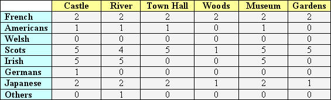
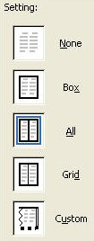
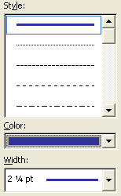
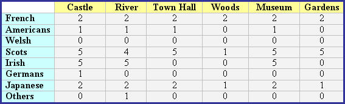

Free
computer Tutorials
|
Free
computer Tutorials
|
|
 home home |
|
||||
|
This lesson is part of an ongoing tutorial. Click here for the first part: Using the Table Toolbar Add a Border to your Word TableIn the previous section, you designed a table that looked something like this one:  In this lesson, you'll see how to add a border to the table above. To add a border for your table, do the following.
Have a closer look at the left hand side of the Borders dialogue box:  We want a border to go right around our table, so click on Box with the left hand mouse button. To add a colour and a thicker border, we need the Style section of the Border dialogue box. Change your Style section to match the image on the right of the two below:  Obviously, you can choose any settings you like for the Border colour. Fell free to change them from the ones above. Once you have chosen a border colour and a line style, click the OK button to return to the Table Properties dialogue box. Click the OK button on the Table Properties box to see your borders. You final table should now look something like this: 
In the next part, we'll have at look at what Macros are. |
|||||
|